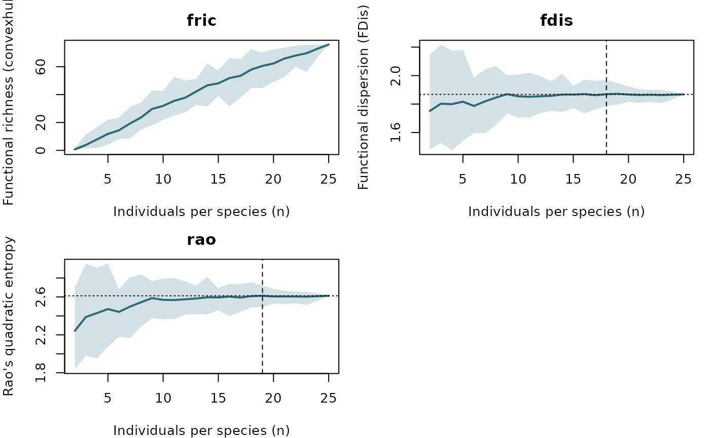

Rarefaction of community functional diversity indices against sampling effort
Source:R/fd_accumulation.R
fd_accumulation.RdExtends the individual-sampling rarefaction of itv_accumulation() from a
single per-species trait metric to community-level functional diversity
indices: it asks how many individuals must be sampled per species
before each functional diversity index of the assemblage stabilises. For
each sampling effort n (individuals per species), n_perm balanced
sub-samples of n individuals per species are drawn without replacement,
pooled into one assemblage, projected into a fixed trait space (a single
PCA computed once on all individuals, so indices stay comparable across
efforts, as in bootstrap_functional_space()), and every requested index
is recomputed. The draws are summarised by their mean and a resampling
quantile band.
Usage
fd_accumulation(
x,
groups = NULL,
indices = c("fric", "fdis", "rao"),
method = c("convexhull", "dendrogram", "tpd", "hypervolume"),
n_perm = 99,
min_n = 10,
n_axes = NULL,
var_threshold = 0.98,
conv_tol = 0.05,
asymptote_prop = 0.95,
model = c("michaelis", "exponential"),
max_extrap_factor = 5,
probs = c(0.025, 0.975),
dendrogram_linkage = "average",
tpd_alpha = 0.95,
tpd_bw_factor = 0.5,
tpd_n_divisions = NULL,
hv_bw_method = "silverman",
hv_samples_per_point = 500,
log_transform = FALSE,
scale = TRUE,
seed = NULL
)
# S3 method for class 'intrait_fd_accumulation'
print(x, ...)Arguments
- x
An object of class
"intrait_fd_accumulation".- groups
Factor or character vector, one value per row of
x(species). Required for a raw trait table; taken fromx$groupsfor an"intrait_traitspace". Rows with a missing group are dropped.- indices
Character vector, any of
"fric","fdis","rao","feve","fdiv". Defaults toc("fric", "fdis", "rao")."feve"/"fdiv"require the SuggestedFDpackage;"fric"usesmethod.- method
Character, how functional richness (
"fric") is measured:"convexhull"(default, requires Suggestedgeometry),"dendrogram"(no extra package),"tpd"(requires SuggestedTPD) or"hypervolume"(requires Suggestedhypervolume). Ignored when"fric"is not amongindices. Seebootstrap_functional_space()for the measures.- n_perm
Integer, sub-samples drawn per effort level. Defaults to
99.- min_n
Integer, minimum individuals for a species to be retained; effort is capped at the smallest retained species' size. Defaults to
10.- n_axes, var_threshold
Definition of the fixed trait space, built exactly as in
trait_space()/bootstrap_functional_space()(the same internal machinery): the traits are optionally log-transformed and scaled, constant columns dropped, and a PCA is run once on all individuals.n_axesis the number of PCA axes retained; ifNULL(default) the smallest number of axes reachingvar_threshold(default0.98) cumulative variance is chosen automatically. Keepn_axessmall (e.g.2) formethod = "tpd"/"hypervolume", whose kernels are only tractable in a few dimensions.- conv_tol
Numeric in (0, 1), precision tolerance for convergence indices. Defaults to
0.05.- asymptote_prop
Numeric in (0, 1), asymptote fraction defining
n*for"fric". Defaults to0.95.- model
"michaelis"(default) or"exponential", the saturating model for"fric".- max_extrap_factor
Numeric > 1, reject a fitted
"fric"asymptote greater than this multiple of the observed maximum. Defaults to5.- probs
Length-2 lower/upper probabilities for the resampling band. Defaults to
c(0.025, 0.975).- dendrogram_linkage, tpd_alpha, tpd_bw_factor, tpd_n_divisions, hv_bw_method, hv_samples_per_point
Method-specific tuning for
"fric", passed through to the shared richness machinery exactly as inbootstrap_functional_space(); each is ignored by the methods that do not use it.- log_transform, scale
Preprocessing of a raw trait table, as in
trait_space():log_transformapplieslog10(x + 1);scalestandardises each trait before the PCA. Ignored for an"intrait_traitspace". DefaultFALSEandTRUE.- seed
Optional integer for
set.seed(). Defaults toNULL.- ...
Currently unused.
Value
An object of class "intrait_fd_accumulation", a list with:
- curve
a
data.framewith columnsindex,n,mean,lower,upper.- summary
a
data.frame, one row per index, withindex,framing,v_full,asymptote,prop_reached,k,n_star.- indices, method, n_perm, n_axes, n_species, n_cap, conv_tol, asymptote_prop, model, probs
settings used.
Has print() and plot() methods.
Invisibly returns x.
Details
Entities are individuals (so the indices are sensitive to intraspecific
variability), pooled into a single unweighted assemblage. Rarefaction is
balanced: only species with at least min_n complete individuals are
kept, and effort is capped at the smallest retained species' size, so every
species contributes exactly n individuals at every effort level and no
species-richness effect is confounded with sampling effort.
As in itv_accumulation(), the meaning of "stabilises" depends on the kind
of index:
- Accumulation index (
"fric") Functional richness (the convex hull volume of the pooled individuals) genuinely rises with
nand saturates. A Michaelis-Menten or negative-exponential model is fitted andn*is the effort reachingasymptote_propof the fitted asymptote. A near-flat or ill-conditioned curve can send the fitted asymptote to implausible values; a fit whose asymptote exceedsmax_extrap_factortimes the observed maximum is rejected and reported as"accumulation (no asymptote identified)", with the observed curve still returned.- Convergence indices (
"fdis","rao","feve","fdiv") Dispersion / regularity indices are (near-)unbiased in expectation, so their mean is essentially flat and what stabilises is precision:
n*is the smallestnbeyond which the resampling band's relative half-width stays at or belowconv_tol.
Index engines. "fdis" (functional dispersion, the mean distance of
individuals to their centroid; Laliberte & Legendre, 2010) and "rao"
(Rao's quadratic entropy, the mean pairwise distance; Botta-Dukat, 2005)
are computed directly. "feve" (functional evenness) and "fdiv"
(functional divergence; Villeger et al., 2008) are delegated to
FD::dbFD() and are only available when the (Suggested) FD package is
installed. "fric" is functional richness, and – like
bootstrap_functional_space() – how it is measured is controlled by
method: the convex-hull volume ("convexhull", the default FRic of
Villeger et al., 2008), the total branch length of a UPGMA functional
dendrogram ("dendrogram", Petchey & Gaston, 2002), the Trait Probability
Density richness ("tpd", Carmona et al., 2019) or a Gaussian-kernel
hypervolume ("hypervolume", Blonder et al., 2014). The kernel/grid used by
"tpd" and "hypervolume" is fixed once from the full individual set so
the richness stays comparable across efforts (as in
bootstrap_functional_space()). Requested but unavailable indices/methods
(missing Suggested package) are dropped with a message.
The n_perm draws at each effort are independent and are distributed across
future.apply's workers when that (Suggested) package is installed and a
parallel future::plan() is set, exactly as in
bootstrap_functional_space(); otherwise they run sequentially with
identical results.
References
Villeger, S., Mason, N. W. H., & Mouillot, D. (2008). New multidimensional functional diversity indices for a multifaceted framework in functional ecology. Ecology, 89(8), 2290-2301.
Laliberte, E., & Legendre, P. (2010). A distance-based framework for measuring functional diversity from multiple traits. Ecology, 91(1), 299-305.
Botta-Dukat, Z. (2005). Rao's quadratic entropy as a measure of functional diversity based on multiple traits. Journal of Vegetation Science, 16(5), 533-540.
Examples
fish <- simulate_fishmorph_points(n_per_species = 25, n_replicates = 1)
ratios <- fishmorph_ratios(fishmorph_segments(fish))
# \donttest{
acc <- fd_accumulation(
ratios[, c("BEl", "VEp", "REs", "OGp")],
groups = fish$metadata$species,
indices = c("fric", "fdis", "rao"), n_perm = 30, min_n = 10, seed = 1
)
#> Rarefying 3 species, effort n = 2..25 individuals/species, in 4 PCA axes.
#> Warning: NAs introduced by coercion to integer range
acc
#> <intrait_fd_accumulation>
#> 3 index/indices on 3 species, effort n = 2..25, 30 permutation(s)
#> functional richness method = convexhull
#>
#> -- Stabilisation effort n* per index --
#> index framing v_full asymptote prop_reached k
#> fric accumulation (no asymptote identified) 75.8800 NA NA NA
#> fdis convergence 1.8679 NA NA NA
#> rao convergence 2.6120 NA NA NA
#> n_star
#> NA
#> 18
#> 19
plot(acc)

# }